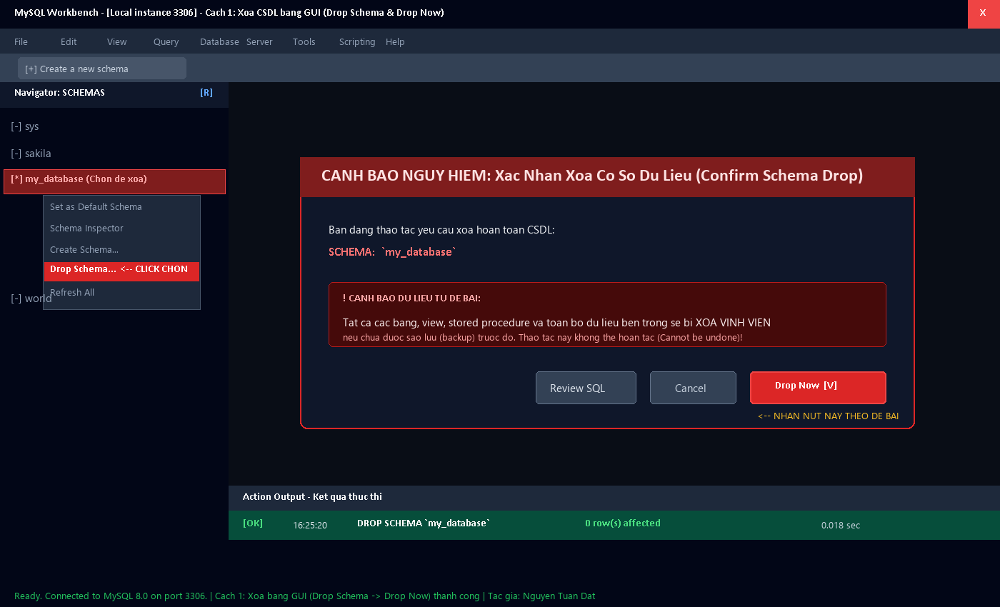
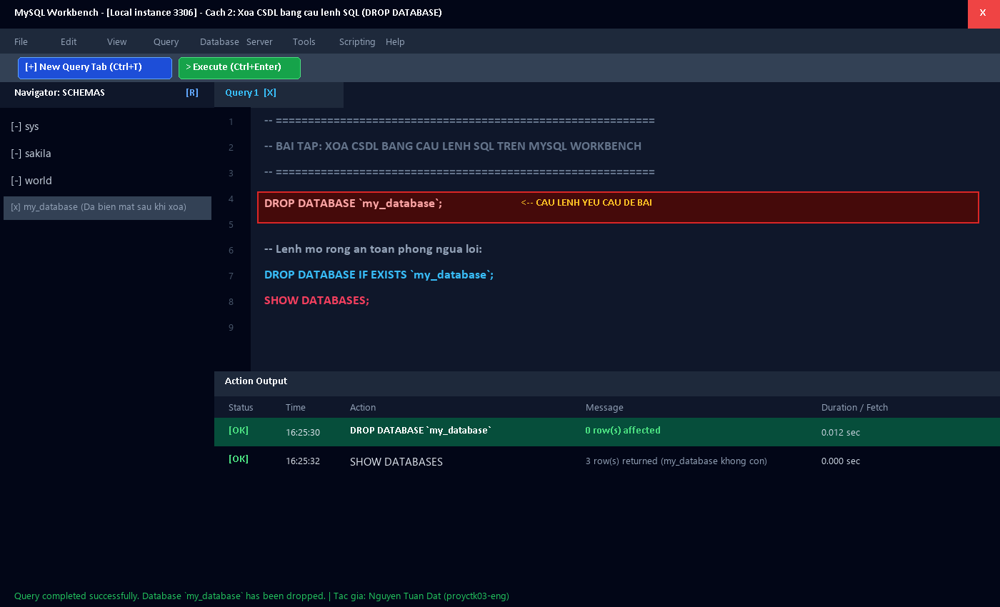
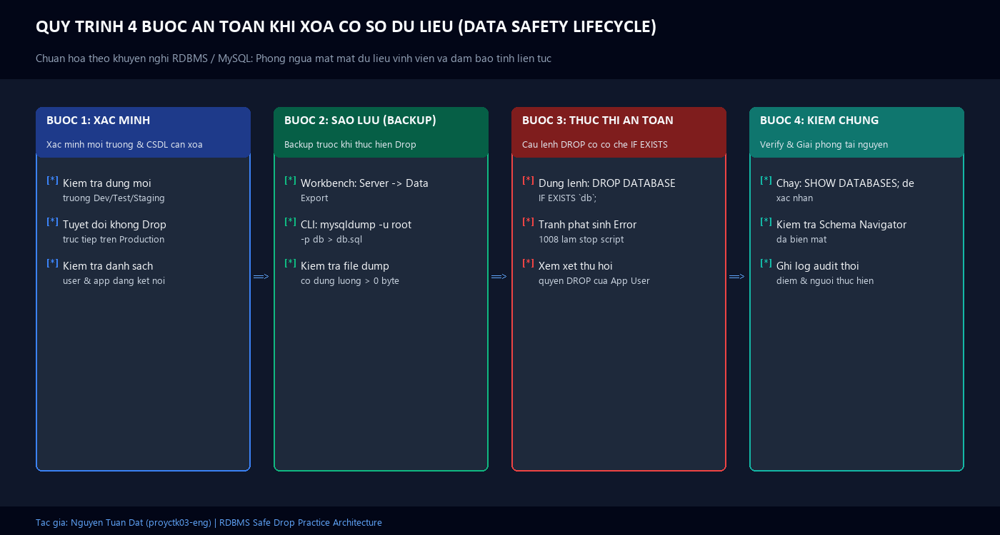

BÀI THỰC HÀNH CSDL MYSQL WORKBENCH
Xoá Cơ Sở Dữ Liệu Trên MySQL Workbench
Thực hành 2 phương thức: Giao diện đồ họa (Drop Schema) & Câu lệnh SQL (DROP DATABASE)
⚠️ CẢNH BÁO AN TOÀN TỪ ĐỀ BÀI:
🛠️ Cách 1: Xoá CSDL Bằng Giao Diện MySQL Workbench (GUI)
Bật MySQL Workbench và đăng nhập bằng tài khoản root.
Tại panel Navigator: SCHEMAS bên trái, chọn CSDL muốn xoá (ví dụ my_database).
Click chuột phải vào CSDL và chọn Drop Schema...
Hộp thoại xác nhận xuất hiện cảnh báo dữ liệu sẽ bị xoá vĩnh viễn: Chọn nút Drop Now .
Kiểm tra trạng thái tại Action Output: Lệnh thực thi thành công và CSDL đã bị xoá khỏi danh sách.

⚡ Cách 2: Xoá CSDL Bằng Câu Lệnh SQL Trên Workbench
Trong cửa sổ MySQL Workbench, nhấn chọn biểu tượng New Query Tab hoặc nhấn Ctrl + T.
Nhập câu lệnh theo yêu cầu đề bài:
Sao chép
DROP DATABASE `my_database`;
Nhấn biểu tượng tia sét (Execute) hoặc tổ hợp phím Ctrl + Enter để chạy lệnh.
Kiểm tra Action Output: Dấu tích xanh [OK] DROP DATABASE my_database - 0 row(s) affected.
Nhấn Refresh ở mục SCHEMAS để xác nhận CSDL đã được xoá thành công!

🛡️ Mở Rộng: Quy Trình 4 Bước An Toàn Dữ Liệu (Data Safety)
Cơ chế chuyên nghiệp: Luôn sử dụng IF EXISTS và sao lưu trước khi xoá:
DROP DATABASE IF EXISTS `my_database`;SHOW DATABASES ;
